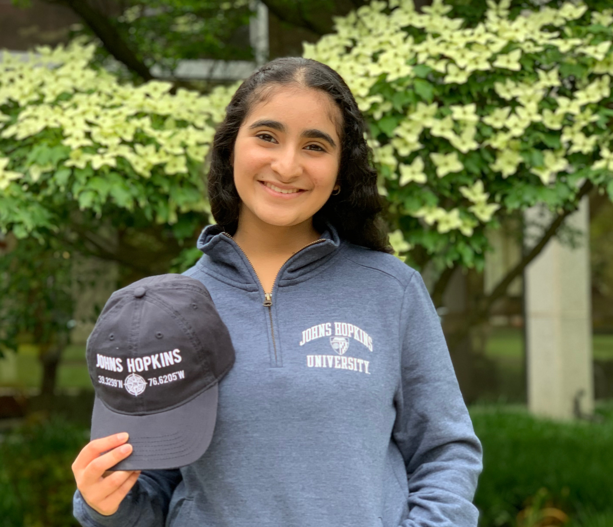

We are Ananya and Aryaman, two DCPS graduates who want to help students in D.C. The coronavirus pandemic has hit struggling students, overworked teachers, and underfunded schools hard.
Washingtutors is our answer.